Лекция 4: Создание оригинальных шрифтов в Photoshop
На этом занятии мы выполним ряд упражнений со шрифтом и текстом в Photoshop.
Текст с тенью
Выполните команду Файл-Создать и установите размер "холста" для работы 800 на 600 пикселей ( рис. 4.1). Остальные параметры этого окна оставьте без изменений (с настройками по умолчанию).
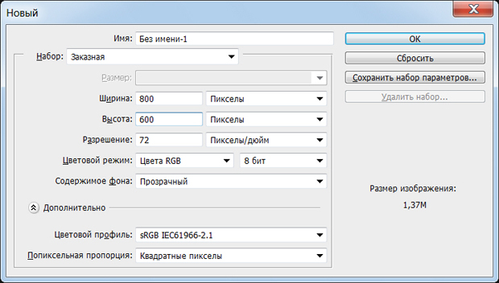Рис. 4.1. Задаем параметры рабочего листа
Активируйте на панели инструментов инструмент Горизонтальный текст (T) и наберите любой текст, выбрав его параметры на панели свойств этого инструмента ( рис. 4.2).
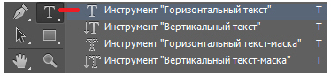Рис. 4.2. Инструмент Горизонтальный текст
Совет
Не мельчите - пишите крупными буквами.
Найдите на Палитре инструментов инструмент Волшебная палочка (W) - рис. 4.3.
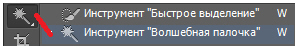Рис. 4.3. Инструмент Волшебная палочка
Удерживая клавишу Shift, выделите весь текст Волшебной палочкой, а затем нажмите на клавиатуре 5 раз клавишу "стрелка вверх" и 5 раз клавишу "стрелка вправо" - этим вы произведете перемещение текста на 5 пикселей влево и на 5 пикселей вверх ( рис. 4.4).
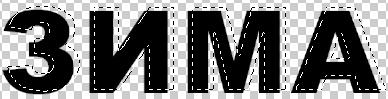Рис. 4.4. Иллюстрация момента смещения текста вверх и вправо
Найдите в Палитре инструментов инструмент Кисть (B) - рис. 4.5.
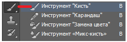Рис. 4.5. Инструмент Кисть (B)
Выберите основной цвет - красный и кистью произведите закрашивание выделения. Удобный для работы размер кисти вы можете выбрать на панели ее свойств ( рис. 4.6).
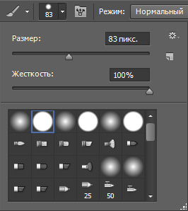Рис. 4.6. Окно настройки параметров инструмента Кисть
Работу над примером завершите командой Выделение-Отменить выделение - рис. 4.7.
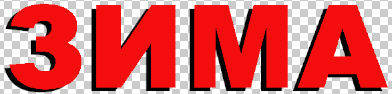Рис. 4.7. Текст с тенью создан
Вырезаем текст из фотографии (Текст из текстуры)
Используя инструмент Горизонтальный текст-маска (T) можно легко и быстро создавать шрифт, вырезанный из изображения (текстуры). Найдите этот инструмент ( рис. 4.8).
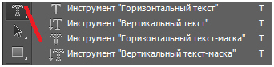Рис. 4.8. Горизонтальный текст-маска
Откройте любую фотографию ( рис. 4.9), и, выбрав инструмент Горизонтальный текст-маска, напишите на ней какой-либо текст. Не мельчите - пишите крупными буквами.
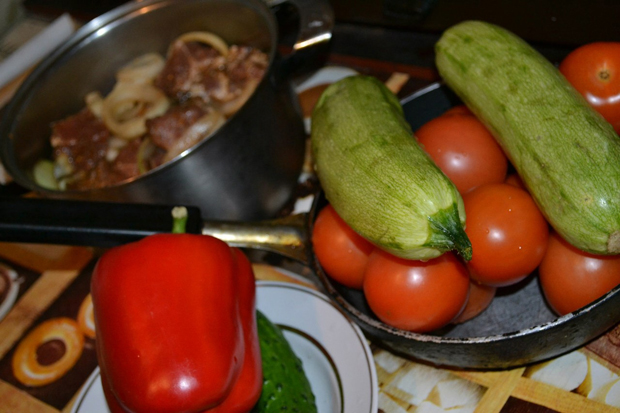Рис. 4.9. Исходное фото - текстура для текста
Для превращения написанного вами текста в выделение переключитесь с инструмента Горизонтальный текст-маска на любой другой инструмент ( рис. 4.10).

Рис. 4.10. Текст превратился в выделение
Если теперь выделение скопировать на новый, чистый лист, то получим текст на основе фотографии-текстуры. Для подобной операции вам потребуются команды: Редактирование-Вырезать ( рис. 4.11), Файл-Создать, Редактирование-Вставить ( рис. 4.12)
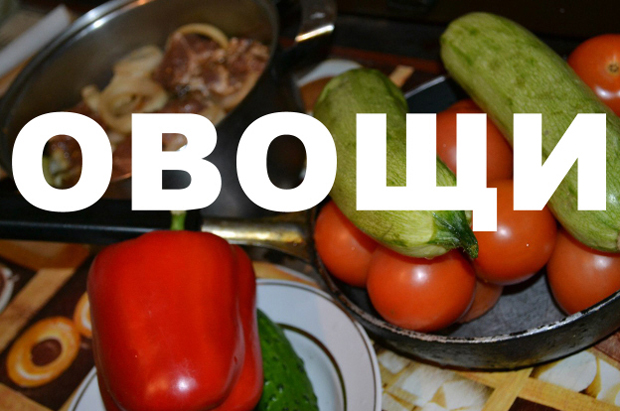Рис. 4.11. Выполнена команда Редактирование-Вырезать
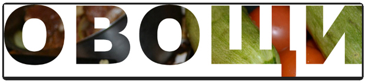Рис. 4.12. Текст на основе фототекстуры создан
Знакомство с инструментом Стиль слоя (3D текст)
В этом примере вы познакомитесь с созданием эффекта тиснения, то есть выдавливанием объемных букв текста. Создайте пустой рабочий лист, выбрав команду Файл-Создать. Так мы создали новое изображение (документ) с белым цветом фона. Выберите в панели инструментов инструмент Горизонтальный текст-маска и напечатайте любую надпись. Пусть это, например, будет текст Новый год - рис. 4.13.
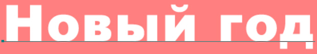Рис. 4.13. Текст напечатан
Превратите текст в выделение. Для этого щелкните мышью на любом из инструментов в палитре инструментов (кроме инструмента Текст) - рис. 4.14.
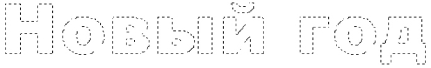Рис. 4.14. Шрифт превращен в выделение
Чтобы вы могли применить эффекты слоя, выполните команду Слой-Новый-Скопировать на новый слой (CTRL+J). Смысл этой команды в создании нового слоя Слой 1, который становится активным. О том, что такое слои, мы поговорим позже.
Примечание
Операцию создания нового слоя Слой 1 можно выполнить другим способом - с помощью копирования содержимого выделенной области (Ctrl+C) с последующей вклейкой (Ctrl+V).
После выполнения указанной выше команды выделенный текст исчезнет. Не пугайтесь - все правильно! Теперь мы можем применить эффекты слоя. Для этого выполните команду Слой-Стиль слоя-Тиснение - откроется окно диалога Стиль слоя с установленным в нем флажком эффекта Тиснение - рис. 4.15.
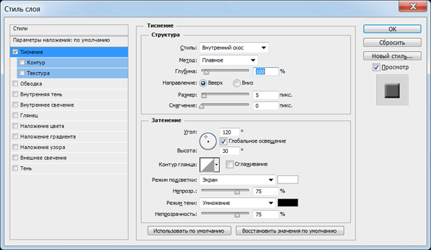Рис. 4.15. Окно стиль слоя
В данном окне, меняя параметры тиснения, вы можете получить самые разнообразные шрифтовые решения для вашей надписи ( рис. 4.16).
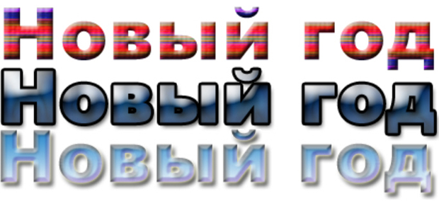Рис. 4.16. Эффект выдавленных букв получен (три варианта)